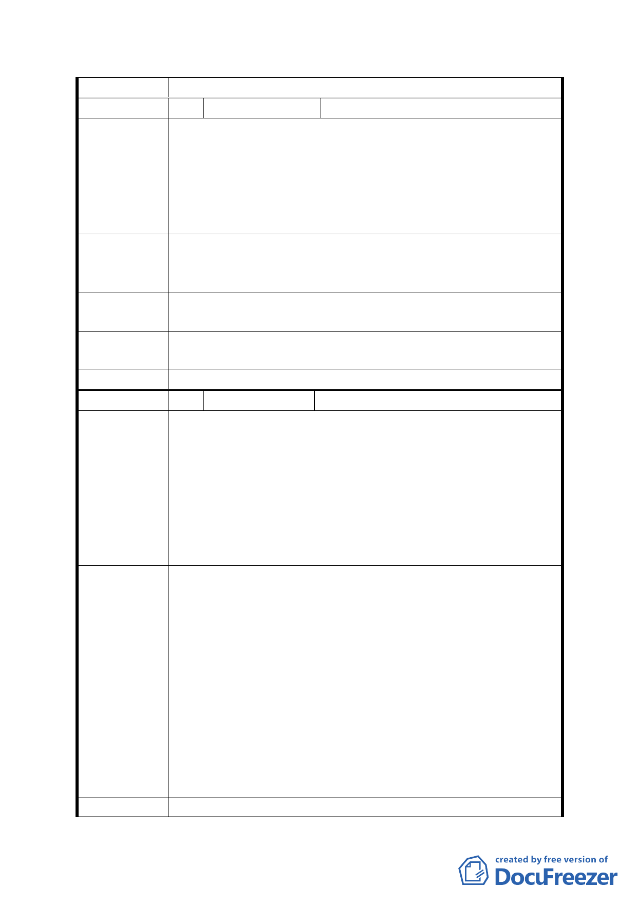

委員會決議 同意依「市府修正後回應說明」辦理
編 號 19 陳情人
高文彬
1. 本區方圓一公里內都沒有公園。
2. 軍營影響本區發展甚鉅。
陳情理由
3. 本區沒有淹水問題為何要興建蓄水池?!請給說明。
本人擔心不建不淹水，建了以後反而淹水，難道貴單
位可書面保證決不會淹水嗎？！另該計畫緊鄰國小，擔
心蓄水池規劃不當會使小學生發生意外！
1. 應將該區規劃為公園。
建 議 辦 法 2. 應立即遷移軍營。
3. 基於前述理由強烈要求廢除蓄水池興建計畫。
第五次專案小組
審查結論
同編號 1
市府修正後
回應說明
同編號 18
委員會決議 同意依「市府修正後回應說明」辦理
編 號 20 陳情人
季瑞
之前一直認為該地會變更為公園用地，但在聽過說明會後，
發現竟是將軍營就地合法，變更為機關用地，這樣未免也太
便宜行事，一點都沒為地方建設著想！請教為何要捨公園而
陳情理由
就軍營，其中的理由是什麼？難道不知本區長久因軍營所
在，每到夜晚燈色灰暗，治安死角充斥，是台北捷運站中最
蕭條最冷清的一個；既然貴單位為都市計畫委員會，理應將
地方繁榮發展列為優先考量，規劃出長久且具建設性之計畫
案，因此強烈建議該區未來發展應規劃如下。
1. 配合附近國小教學將該區闢建成【生態公園】。
2. 生態公園區內規劃各式【動植物生態區】，並立解說牌，
讓生活於都市中的居民，有綠色公園可以深呼吸並藉由
認識動植物進而愛護地球，落實環保。
3. 於公園地下興建【停車場】，可一併解決本區長久以來停
建議
辦
法
車位嚴重不足之問題。
4. 公園外圍部份可闢建【自行車道】，進一步可將該車道前
後延伸連接敦南市中心及政大河濱自行車道，讓市民假
日休閑多了一個好去處。
結論：如此規劃既有建設性又融合當地有山（福州山）有水
（貴單位正研擬興建之蓄水池）的自然環境，勢必可
塑造特有的人文氣息，形成台北市的新地標。
第五次專案小組 同編號 1
- 28 -